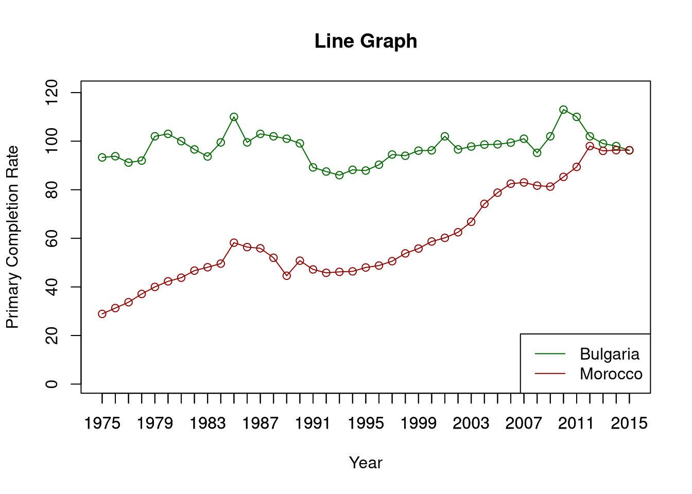
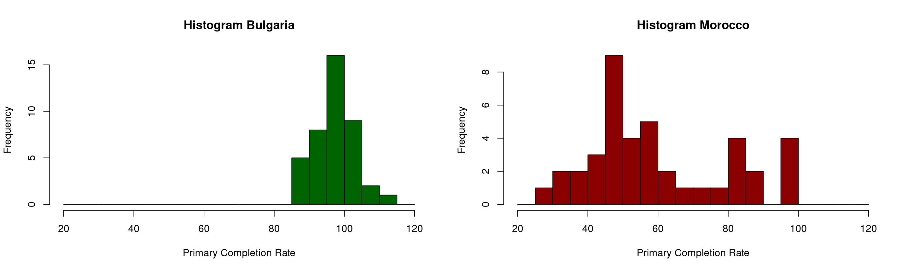
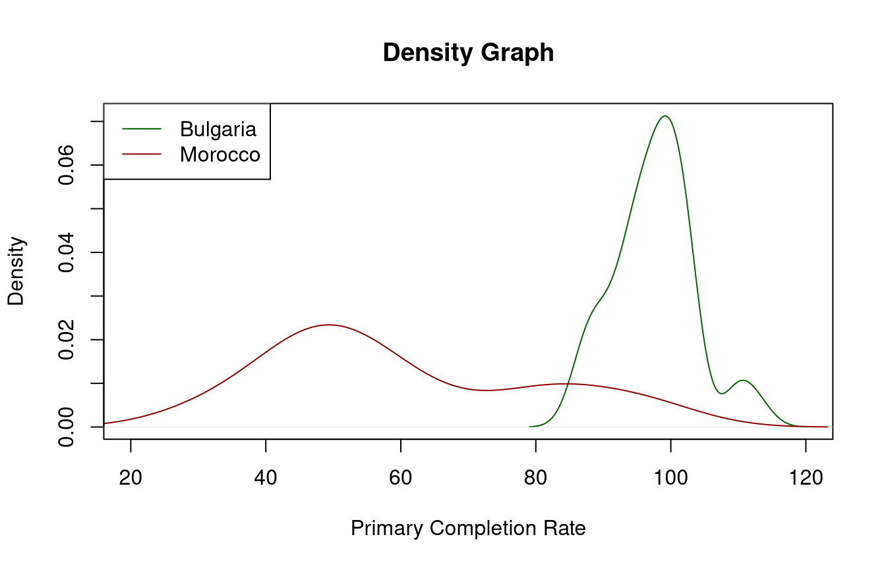
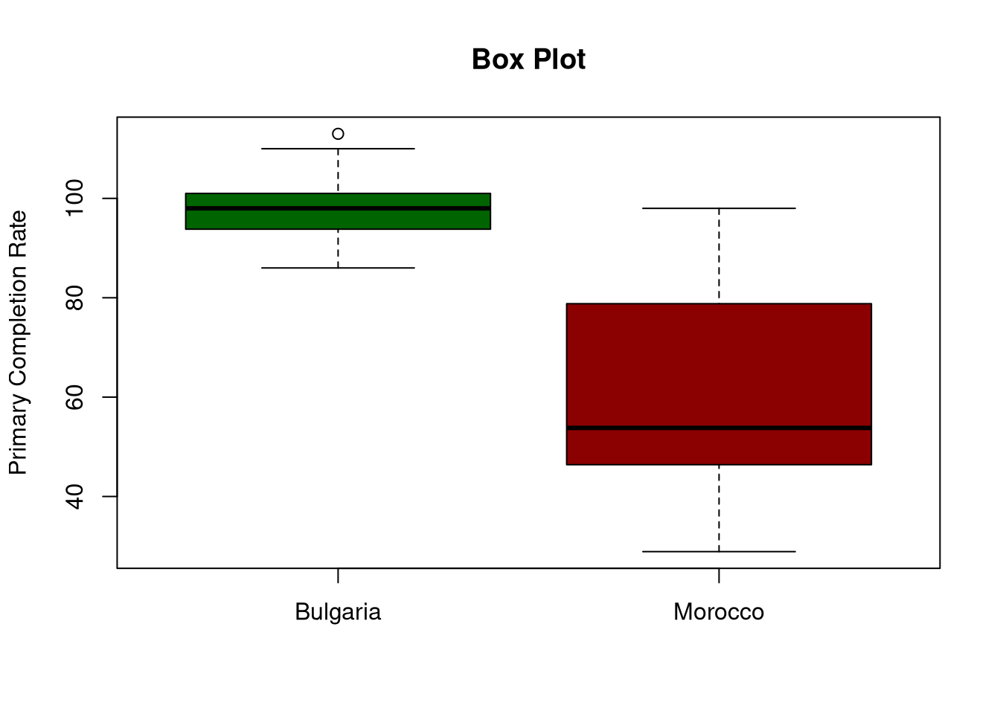
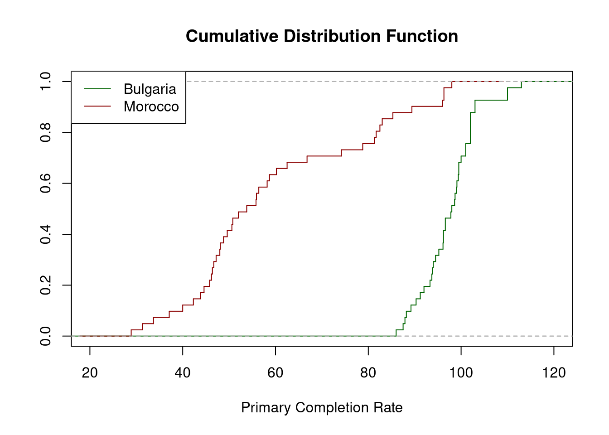

| country | X1970 | X1971 | X1972 | X1973 | X1974 | X1975 | X1976 | X1977 |
|---|---|---|---|---|---|---|---|---|
| Aruba | NA | NA | NA | NA | NA | NA | NA | NA |
| Afghanistan | NA | NA | NA | NA | 16.7 | NA | NA | 17.9 |
| Angola | NA | NA | NA | NA | NA | NA | NA | NA |
| Albania | NA | NA | NA | NA | NA | NA | NA | NA |
| United Arab Emirates | NA | NA | NA | NA | 39.5 | 41.7 | 49.5 | 56.8 |
| Argentina | 71 | 71.8 | NA | NA | 75.6 | 78.9 | 78.6 | NA |
Overview
This projects aims to analyze and compare the Primary Education Completion data from Bulgaria and Morocco over the period of 1975-2015.
Data
Data sourced from UNESCO Institute of Statistics via https://www.gapminder.org/data/ under CC-BY-4.0 License.
Inferences
- Data is continuous in nature.
- A lot of data is missing. Bulgaria and Morocco have low missing data, thus we analyze these countries.
Importing Dataset
library("psych")
library("moments")
library("knitr")
rate_data = read.csv("./Data/primary_completion_rate.csv")
rate_bgr = as.numeric(rate_data[016, 7:47])
rate_mar = as.numeric(rate_data[110, 7:47])
Numerical Analysis
Summary Measures
bgr = as.vector(summary(rate_bgr))
mar = as.vector(summary(rate_mar))
brief = data.frame(
Measure = c(
"Minimum", "1st Quuartile", "Median", "Mean", "3rd Quartile", "Maximum",
"Geometric Mean", "Harmonic Mean", "Mode",
"Range", "IQR"),
Bulgaria = c(bgr,
geometric.mean(rate_bgr),
harmonic.mean(rate_bgr),
colnames(t(sort(table(rate_bgr), decreasing=TRUE)))[1],
bgr[6]-bgr[1], IQR(rate_bgr)),
Morocco = c(mar,
geometric.mean(rate_mar),
harmonic.mean(rate_mar),
colnames(t(sort(table(rate_mar), decreasing=TRUE)))[1],
mar[6]-mar[1], IQR(rate_mar)))
kable(brief)| Measure | Bulgaria | Morocco |
|---|---|---|
| Minimum | 86 | 28.9 |
| 1st Quuartile | 93.8 | 46.4 |
| Median | 98 | 53.8 |
| Mean | 97.5390243902439 | 59.8292682926829 |
| 3rd Quartile | 101 | 78.8 |
| Maximum | 113 | 98 |
| Geometric Mean | 97.3595997113863 | 56.8341293287218 |
| Harmonic Mean | 97.1812794418763 | 54.0355310609177 |
| Mode | 102 | 96.3 |
| Range | 27 | 69.1 |
| IQR | 7.2 | 32.4 |
Inferences
- Bulgaria:
- Median: Relatively high, compared to Morocco.
- Mean: Close to Median, indicating symmetrical distribution.
- The Range and IQR: Small, data points lie close to the mean.
- Morocco:
- Median: Relatively Low, compared to Bulgaria.
- Mean: Significantly higher than Median, indicating positive skew.
- The Range and IQR: Large, data points are dispersed far from the mean.
Quantiles
Quartile
quartiles = data.frame(
Bulgaria = quantile(rate_bgr, probs = seq(0.25, 0.75, 0.25)),
Morocco = quantile(rate_mar, probs = seq(0.25, 0.75, 0.25)))
kable(quartiles)| Bulgaria | Morocco | |
|---|---|---|
| 25% | 93.8 | 46.4 |
| 50% | 98.0 | 53.8 |
| 75% | 101.0 | 78.8 |
Deciles
deciles = data.frame(
Bulgaria = quantile(rate_bgr, probs = seq(0.1, 0.9, 0.1)),
Morocco = quantile(rate_mar, probs = seq(0.1, 0.9, 0.1)))
kable(deciles)| Bulgaria | Morocco | |
|---|---|---|
| 10% | 89.2 | 40.0 |
| 20% | 93.3 | 45.8 |
| 30% | 94.5 | 47.2 |
| 40% | 96.2 | 49.6 |
| 50% | 98.0 | 53.8 |
| 60% | 99.1 | 58.2 |
| 70% | 100.0 | 66.8 |
| 80% | 102.0 | 81.7 |
| 90% | 103.0 | 89.4 |
Measures of Dispersion
dispersion = data.frame(Measure = c("Variance", "Standard Deviation",
"Skewness", "Kurtosis"),
Bulgaria = c(var(rate_bgr), sd(rate_bgr),
skewness(rate_bgr), kurtosis(rate_bgr)),
Morocco = c(var(rate_mar), sd(rate_mar),
skewness(rate_mar), kurtosis(rate_mar)))
kable(dispersion)| Measure | Bulgaria | Morocco |
|---|---|---|
| Variance | 36.1359390 | 385.7681220 |
| Standard Deviation | 6.0113176 | 19.6409807 |
| Skewness | 0.2962488 | 0.5800912 |
| Kurtosis | 3.2336766 | 2.1783983 |
Inferences
- Bulgaria:
- Variation: Low, data points are generally clustered close to the mean.
- Skewness: Positively Skewed.
- Kurtosis: Leptokurtic, as greater than 3.
- Morocco:
- Variation: High, data points generally lie away from Mean.
- Skewness: Positively Skewed.
- Kurtosis: Platykurtic, as less than 3.
Moments
moments = data.frame(
Moment_Number = seq(1,6),
Bulgaria = all.moments(rate_bgr, order.max = 6,
central = TRUE)[2:7],
Morocco = all.moments(rate_mar, order.max = 6,
central = TRUE)[2:7])
kable(moments, digits = 32)| Moment_Number | Bulgaria | Morocco |
|---|---|---|
| 1 | 6.932124e-15 | 9.531671e-16 |
| 2 | 3.525457e+01 | 3.763591e+02 |
| 3 | 6.201258e+01 | 4.235454e+03 |
| 4 | 4.019088e+03 | 3.085618e+05 |
| 5 | 2.350716e+04 | 6.232667e+06 |
| 6 | 6.507629e+05 | 3.308025e+08 |
Graphical Analysis
Line Graph
We can observe the trend in Primary Education Completion rate over time.
plot(rate_bgr, type = "o", xaxt = "n",
ylim = c(1, 120), main = "Line Graph",
xlab = "Year", ylab = "Primary Completion Rate",
col = "dark green")
axis(1, at = 1:41, labels = seq(1975, 2015))
lines(rate_mar, type = "o", xaxt = "n",
ylim = c(1, 120), main = "Line Graph Morocco",
xlab = "Year", ylab = "Primary Completion Rate",
col = "dark red")
axis(1, at = 1:41, labels = seq(1975, 2015))
legend(
"bottomright", legend = c("Bulgaria", "Morocco"),
col = c("dark green", "dark red"),lty = c(1, 1))
Inferences
- Bulgaria
- Consistent Primary Completion Rate over time.
- No apparent outliers.
- Morocco
- Positive progress in Primary Completion rate over time.
- No apparent outliers.
Histogram
We can observe the difference in location and spread of the datasets.
par(mfrow=c(1,2))
plot(hist(rate_bgr,
breaks = seq(20, 120, by = 5), plot = FALSE),
main = "Histogram Bulgaria", xlab = "Primary Completion Rate",
col = "dark green")
plot(hist(rate_mar,
breaks = seq(20, 120, by = 5), plot = FALSE),
main = "Histogram Morocco", xlab = "Primary Completion Rate",
col = "dark red")
Density Function
plot(density(rate_bgr), main = "Density Graph",
xlab = "Primary Completion Rate",
xlim = c(20, 120), col = "dark green")
lines(density(rate_mar), col = "dark red")
legend("topleft", legend = c("Bulgaria", "Morocco"),
col = c("dark green", "dark red"), lty = c(1, 1))
Box Plot
boxplot(rate_bgr, rate_mar, main = "Box Plot",
ylab = "Primary Completion Rate",
names = c("Bulgaria", "Morocco"),
col = c("dark green", "dark red"))
Inferences
- Bulgaria:
- Range: Data points limited in 85 to 115 range.
- IQR: Very small IQR.
- Mode: Unimodal distribution with high density at mode.
- Median: slightly above middle of IQR, indicating negative skew amongst data in the IQR.
- Outlier: one potential outlier detected above standard threshold. Ignore as small IQR.
- Morocco:
- Range: Data points are dispersed over 25 to 100 range.
- Mode: Bimodal distribution with a global maxima and a local maxima.
- Median: very close to 1st Quartile, indicating positive skew in the distribution.
- Outlier: no potential outliers detected.
Cumulative Distribution Function
plot(ecdf(rate_bgr), xlim = c(20, 120), col = "dark green",
verticals = TRUE, do.points = FALSE,
main = "Cumulative Distribution Function",
xlab = "Primary Completion Rate", ylab = "")
lines(ecdf(rate_mar), col = "dark red",
verticals = TRUE, do.points = FALSE,
xlab = "Primary Completion Rate", ylab = "")
legend("topleft", legend = c("Bulgaria", "Morocco"),
col = c("dark green", "dark red"), lty = c(1, 1))
Inferences
- Bulgaria: The CDF is very steep between 90 and 105, indicating high density.
- Morocco: The CDF is steep around 45 and 80, indicating bimodal distribution.
Summary
The two countries have different distribution and trend of rate of completion of education at the Primary Level. In Bulgaria it is heavily clustered around 95, while in Morocco it increases from 25 to 95 over time. Generally, Morocco has lower completion ratio than Bulgaria. Both distributions are positively skewed as over time the Primary Completion rate increases.
Thus the primary students of the two countries over 1975 to 2015 were drastically different populations, with respect to their success rate.